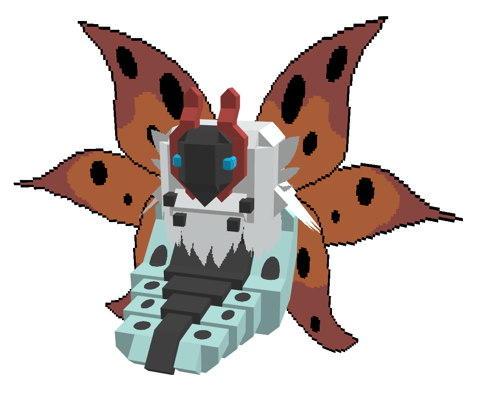

3D modellen als werk
Het is 2015, ik speel het spel Minecraft for 3 jaar. De makers plaatsen een bericht op hun site met een nieuwe update: 1.8.
Net deze update kreeg je de mogelijkheid om eigen 3D modellen in het spel te laden. Waar ze eerst de mogelijkheid gaven om volledige OBJ WaveFront modellen in te laden, bleek dat toch niet zo'n goed idee.
Dus werdt er een eigen manier gemaakt voor het inladen van 3D modellen, namelijk met gebruik van JSON bestanden.
JSON is een taal met eigenlijk alleen maar, haakjes ([{, hoge komma's " en stipjes :.
Eerst waren er nog geen software om de modellen te maken dus moest ik het eerste halve jaar alle modellen met de hand in code typen.
Hieronder zie je hoe ze er toen uitzagen, zonder software.

Het eerste programma dat ik gebruikte, en volgensmij ook in de community werd uitgebracht, was OPL's Model Creator.
Als je het zo bekijkt ziet het er zeer matig uit, maar toen deed het wat het moest doen dus dat was voldoende.

Nu gebruik ik (en vele anderen) een programma genaamd BlockBench en het is zoveel beter dan alle andere speciaal gemaakte software voor Minecraft 3D modellen.
De grootste reden waarom deze goed aangeschreven staat is omdat de maker er van regelmatig update, luisterd naar zijn community en een gezellige discord server heeft.

|
Voorbeelden van mijn 3D modellen
Nu weet je dat ik al een tijdje bezig ben met het maken van 3D modellen voor Minecraft.
Hieronder zal ik wat voorbeelden laten zien van mijn projecten waar ik het meest trots op ben, met de titel er bij.
Modern Weapons Pack
Dit is een project dat iedereen kan downloaden, dit heb ik puur gemaakt zodat ik wat meer in de community rond ging.


Pokémon Generatie 5
Dit project was voor een best grote klant waar ik al 2 generaties aan pokémon had voor gemaakt.
Helaas door de hele corona bende moesten developers uit het team verdwijnen en is de release van de Generatie 5 nog ver te zoeken.


|
Nog meer voorbeelden
Hieronder nog meer voorbeelden van wat projecten van nu, of die ik al heb afgerond.
RPG Medieval Wapens
Een klant van me waar ik nog voor werk, wilde een lijst met voorbeelden van fantasie/medieval wapens naar 3D modellen gemaakt hebben. Hieronder mijn favoriete modellen daar van.


Wat random modellen
Gemaakt voor verschillende projecten, maar heb er maar even snel een paar gepakt.
Deze eerste, de zombie, is voor een project in samenwerking met een YouTuber genaamd CaptainSparklez.

|
En natuurlijk nog andere hobbies
Naast mijn 3D model werk heb ik natuurlijk ook nog andere hobbies.
Vroeger vond ik tekenen heel leuk maar dat is in de afgelopen jaren er toch wel uit gegaan.
Zo af en toe, als ik tijd heb omdat ik niet werk, dan speel ik ook nog wel eens een game natuurlijk.
Je kan wat meer info over die games vinden op de pagina, favoriete games.
Ik heb hier wel een lijstje met de games die ik vroeger leuk vond, en nu.
-
Call of Duty: World At War
COD WAW was mijn eerste Call Of Duty game en tot heden is het nog steeds mijn favoriete.
Momenteel speel ik daarom ook Call Of Duty WWII, een beetje nostalgie van de tijd van World At War.
-
Call of Duty: Black Ops (1 en 2)
COD BO was, zoals bekend in de community, een zeer goed spel met een heel erg interessant verhaal.
Ik heb destijds zowel BO1 als BO2 op de PS3 uitgespeeld, Campaign op hardcore, Multiplayer Prestige Master met alles goud (En in BO2 alles Diamond camo).
-
Pokémon Diamond, Pearl en Platinum
Zoals ik bij mijn jeugd heb verteld ben ik opgegroeid met Pokémon. Ik heb wel Pokémon Red gespeeld bijvoorbeeld, maar van alle die ik heb gespeeld is en blijft Generatie 4 het beste.
Dus Pokémon Diamond, Pearl en Platinum. De nieuwste game, Shield heb ik wel, maar vond het eigenlijk zo'n slechte game dat ik nog niet eens op de helft van dat verhaal ben.
-
Subnautica
Ik ben best wel fan van first person games die het net iets anders aanpakken. Subnautica is wel een goed voorbeeld er van. Een survival game (zowat) geheel onder water.
Maar naast dat het een survival game onder water is, heeft het ook gewoon een heel goed verhaal. Omdat het een terror game is, dus niet per sé horror,
is het gevoel dat eigenlijk niet alleen bent in die zee heel leuk om te ervaren, je kamer helemaal donker, dan in de donkere gedeeltes van die game zitten en dan niet wetend wat er leeft.
|